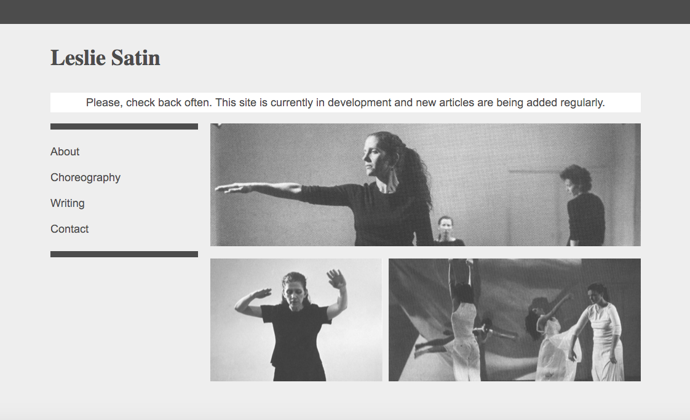
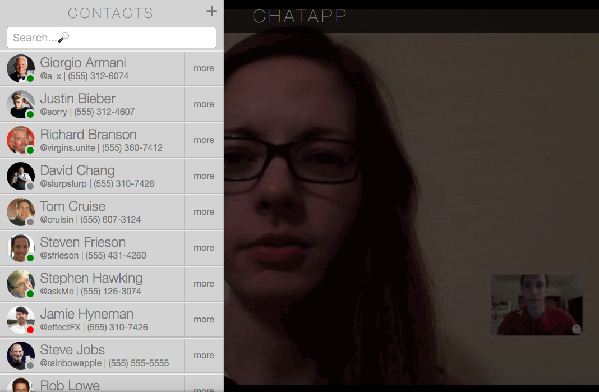
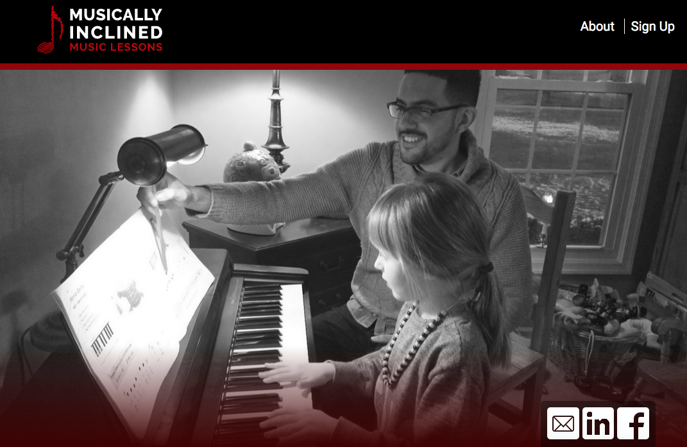
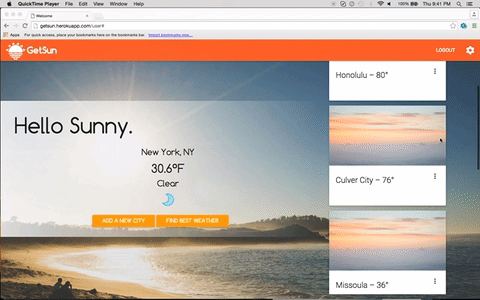
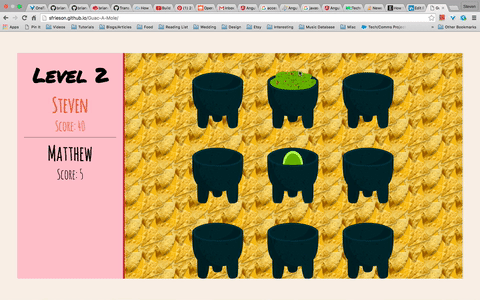
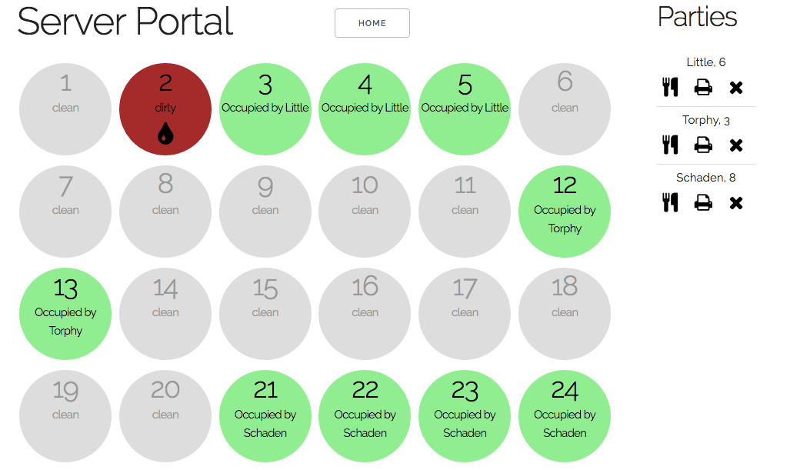
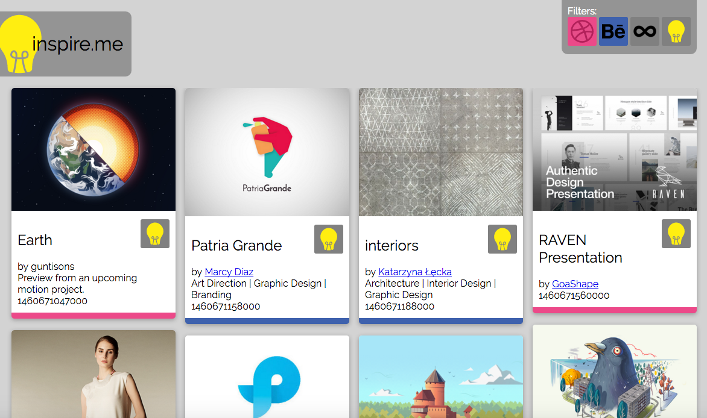

The website for the choreographer, dancer, professor, and writer Leslie Satin. The website serves the purpose of being a tool for Leslie Satin catalog all she's worked on in a more elegant way than a CV. At the same time, the website had to be easy to update regularly.

Ravlery is a website that I've been using for years to find patterns for knitting and crocheting. When I learned that they had an API, I thought this could be an interesting opportunity to make a JavaScript interface for it in the form of a NPM package, in case other people wanted to use their info on their personal website or elsewhere. This project was interesting because I had to think about making the package as easy to use as possible while offerring full access to the API. Not only that but I had to think about versioning very carefully to not break what others might have already worked on, and offer documentation for it all. All in all, I'm proud with out it has turned out.
-
Used Ruby on Rails to serve an API of contacts
-
Uses RESTful routes for CRUD actions
-
Uses AngularJS to consume API and render mobile response view.
-
Learned SASS to reduce reliance on libraries and frameworks.

Musically Inclined Music Lessons
Take a Lesson
GitHub
Technologies:
- AngularJS
- Angular Material
- PostgreSQL
- Express
- Jasmine
Being there at the inception, I was able to make Musically Inclined Music Lessons' logo as well as their website. Keeping it simple this website, it's just the first entry point for a new piano student to get in touch with MIML and start off their musical journey.

PantryApp
Make a list
GitHub
Technologies:
- AngularJS
- Angular Material
- PostgreSQL
- Express
- Jasmine
As I've been working on a food blog with my wife for the past couple of years, she came up with an idea for an app that would be help us always know what's in the pantry at home. Half-way through my experience at General Assembly, I realized that I could actually make this app myself. With this as the inspiration and our ongoing needs driving the features, I started this app for my final project.
Inspired by the cold and snow of the 2015/16 winter, this app gives you the best weather within 150mi so you can get away from your current snow storm and to sun in no more than three hours. Being a team project, my main contribution was creating the algorithm that compared the weather conditions around you. (Hint: Highest temperature doesn't win if it's also raining with 20mph winds!)

LyricLens
GitHub
Technologies:
- APIs
- Web Scraping
- Express
- Node
-
Learned web scraping techniques in lieu of API
-
Created JavaScript algorithm to select important words from lyric lines
-
Consumed 3rd party API to grab GIFs related to words
-
Used AngularJS to quickly render lyrics next to their images
-
Worked with a partner to start, finish, and present within five hours.
Art District
GitHub
Technologies:
- Yelp API
- Mongoose/MongoDB
- Express
New York City is one of the largest cultural hubs in the world, but at the same time, the distribution of the arts isn't even. While in the boundaries of New York, new neighborhoods with even blurrier boundaries are created by the clumping of these arts establishments. Art District, a group project made for the Hack.Summit() 2016 hackathon, helps visualize these boundaries. These new district highlight not only the popular places to be, but also where the art is not.
Guac-A-Mole
Make some Guac
Technologies:
- AngularJS
- Angular Material
- PostgreSQL
- Express
I always thought it was funny that if you pronounce "guacamole" as you would an English word, it sounds like Whack-A-Mole. When I learned that my first project at General Assembly needed to be a game, I already had one up my sleeve! Take a whack at an avocado to make some Guac-A-Mole!

At General Assembly, we were tasked by a fake client, Gadoe, to make a restaurant management system for him. My iteration of this project included making separate views for the hosts stand, servers, the kitchen, and managers updating restaurant information. The server's view is mobile responsive so they can take orders and print a receipt on the go. There's also the ability for the receipt and other information to be printed in Euros.. you know... for the European patrons.

Inspired by all of the style aggregators out there, I figured I would try my hand at making one as well. Using the Dribbble, Behance, and 500px APIs, I culled these three style sites into one feed. A user can favorite one ones they like, and keep scrolling until they're happy. There's also the ability to filter out which sources you're seeing at a time.
